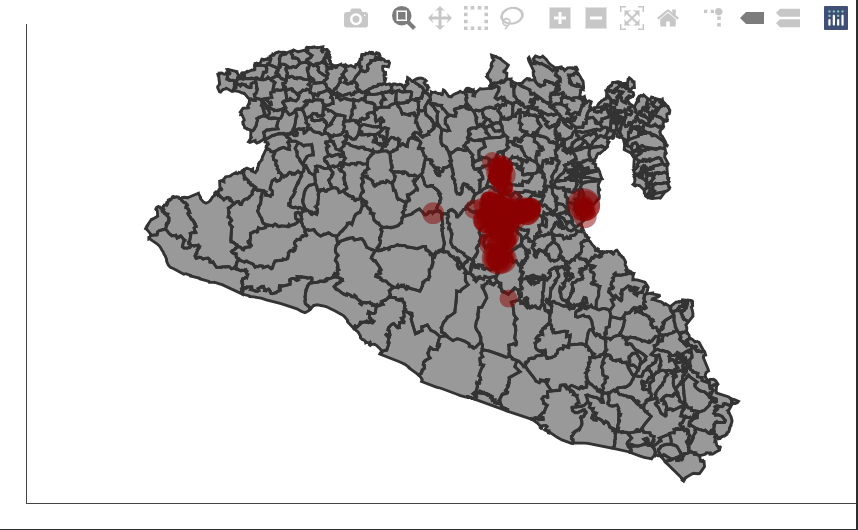

Objetivo: En este laboratorio vamos a introducir reactividad avanzada. Vamos a trabajar con mensajes y botones para hacer mas eficiente nuestra aplicacion.
Vamos a continuar trabajando en la aplicacion que hemos creado, ahora vamos a enfocarnos en como mejorar la interaccion con el usuario y comunicar los procesos a nuestro servidor de manera mas eficiente.
Primero nos aseguramos de tener las librerias cargadas. En este laboratorio introduciremos dos nuevas librerias. La primera es la libreria sf, para manipular objetos espaciales. Y la segunda es plotly, para hacer graficos interactivos.
# Cargar las librerias
library(shiny)
library(dplyr) # Para manipulacion de datos
library(ggplot2) # Para las figuras
library(shinydashboard) # para crear un dashboard
library(STNet) # libreria para bases de datos
library(sf) # libreria para objetos espaciales
library(plotly) # libreria para graficos interactivosVamos a usar los mismos datos de STNet que hemos estado usando. Vamos a introducir una nueva base de datos que tiene los objetos espaciales. Esta nueva base de datos contiene todos los municipios de Mexico. En este laboratorio vamos a filtrar para obtener un objeto espacial del area de estudio.
# asegurate de tener la version mas reciente de la libreria STNet para cargar las nuevas bases de datos
# Cargar los datos del paquete STNet
data("vac") # Datos de vacunacion
data("vigilancia") # datos de vigilancia
data("captura") # Datos de captura
# Loading the spatial data from the package
MxShp <- st_read(system.file("data/MxShp.shp", package = "STNet")) %>%
filter(CVE_ENT %in% c('15', '12', '16')) # filtramos la base de datos para solo usar los estados 15, 12 y 16## Reading layer `MxShp' from data source
## `/Library/Frameworks/R.framework/Versions/4.0/Resources/library/STNet/data/MxShp.shp'
## using driver `ESRI Shapefile'
## Simple feature collection with 2471 features and 6 fields
## Geometry type: MULTIPOLYGON
## Dimension: XY
## Bounding box: xmin: 1058748 ymin: 319149.1 xmax: 4082958 ymax: 2349605
## Projected CRS: MEXICO_ITRF_2008_LCCAhora vamos a proyectar nuestras ubicaciones de las capturas.
Primero transformamos nuestra tabla de capturas a un obeto espacial con la funcion st_as_sf(). En esta funcion hay que especificar el sistema de coordenadas inicial y los nombres de las columnas que tengan los atributos de latitud y longitud (o X y Y).
Despues usamos la funcion st_transform() para proyectar nuestros datos en la misma proyeccion de la base de datos de los municipios.
# proyectar nuestros puntos
capturaSp <- captura %>%
st_as_sf(crs = st_crs(4326), coords = c('LONG', 'LATITUD')) %>%
st_transform(crs = st_crs(MxShp))Vamos a planear nuestra figura ahora. La base de datos de capturas tiene el numero de animales capturados y las localizaciones por año, vamos a hacer un grafico que nos muestre los municipios, y un punto con el numero de capturas por año.
p <- ggplot() + # llamamos a la libreria ggplot
geom_sf(data = MxShp, fill = 'grey60', col = 'grey20') + # ponemos nuestro mapa base
geom_sf(data = capturaSp, aes(size = CAPTURADOS), alpha = 0.5, col = 'red4') + # agregamos nuestros puntos
theme_void() # seleccionamos un tema sin axis ni grids
pUna vez que tenemos nuestro mapa podemos incorporarlo a la aplicacion. Vamos a crear una nueva caja en la pestaña para los datos de captura (tab ‘T3’):
tabItem(tabName = 'T3',
fluidRow(
column(width = 12,
# ... , # aqui va nuestro codigo para la figura anterior
box(title = 'Localizaciones de capturas', width = 6,
plotOutput('CapturaMap')
)
)
)
)Podemos usar el mismo evento reactivo que teniamos anteriormente para la figura del grafico de barras haciendo unas modificaciones al codigo. Anteriormente llamabamos al objeto capturas para hacer el filtrado de los datos en el evento reactivo z(), pero ahora podemos cambiar ese objeto por nuestros datos espaciales proyectados capturasSp y lo podemos usar para el grafico de barras y el mapa.
Nuestro objeto reactivo quedaria asi:
z <- eventReactive(input$filter, {
p <- capturaSp %>% # base de datos espaciales proyectada
filter(NOM_MUN %in% input$Mun,
between(YEAR, input$year[1], right = input$year[2])) # filtramos los datos
})Ahora vamos a crear la figura para el output ‘CapturaMap’
output$CapturaMap <- renderPlot({
ggplot() +
geom_sf(data = MxShp, fill = 'grey60', col = 'grey20') +
geom_sf(data = z(), aes(size = CAPTURADOS), alpha = 0.5, col = 'red4') +
theme_void()
})Podemos correr la aplicacion para ver los cambios.
Ahora que tenemos una aplicacion un poco mas pesada, es un buen momento para introducir los botones de accion. Los botones de accion nos ayudan a controlar los procesos que nuestra aplicacion va a correr para hacer mas efficiente la interaccion y usar menos recursos computacionales.
Los botones de accion son basicamente inputs, y los creamos con la funcion actionButton(), vamos a introducir este nuevo input en nuestro menu donde tenemos los demas inputs. En mi caso, yo los tengo en la barra lateral de mi aplicacion.
sidebar <- dashboardSidebar(
sidebarMenu(
# ..., Otros elementos de mi sidebar
actionButton(inputId = 'filter', label = 'Filtrar datos')
)
)EL botond de accion nos da un mensaje de False si no esta presionado, y True cuando lo presionamos. Podemos usar esto para indicar a nuestra aplicacion cuando correr los procesos de nuestros objetos reactivos. Para esto usamos la funcion eventReactive(). Esta funcion va a remplazar a la funcion reactive() que usamos anteriormente para crear los objetos reactivos.
La funcion eventReactive() requiere un argumento que le indique cuando se debe ejecutar el codigo, para esto vamos a usar nuestro input dell boton de accion.
x <- eventReactive(input$filter, {
p <- vac %>% # base de datos
filter(NOM_MUN %in% input$Mun,
between(YEAR, input$year[1], right = input$year[2])) # filtramos los datos
})Otro recurso que podemos usar para mejorar la interactividad con el usuario son los mensajes de advertencia. Para esto podemos usar la funcion observeEvent(). Esta funcion es ractiva a differentes elementos de nuestra aplicacion y la podemos usar para mostrarnos diferentes mensajes. En este ejemplo la usaremos para indicarnos cuando se termine el proceso de filtrar los datos.
observeEvent(x(), {
showModal(
modalDialog("Plots Updated", # mensaje que queremos mostrar
easyClose = T) # opcion para cerrar haciendo click en cualquier lado fuera de la caja
)
})En esta ultima parte del laboratorio introduciremos graficos interactivos con la libreria plotly.
Esta libreria tiene su propia syntaxis para hacer graficos, pero tambien incluye una funcion muy conveniente para convertir cualquier grafico de ggplot a un grafico interactivo.
En nuestro mapa que creamos anteriormente, los puntos se ven muy amontonados y puede ser dificil de ver las ubicaciones, vamos a transformarlo en un mapa interactivo que nos permita ampliar la imagen y navegar el area.
ggplotly(p) # funcion para convertir graficos de ggplot a plotly
Al transformar nuestro grafico se habilita una barra de menu en la parte superior, esta barra tiene diferentes herramientas como zoom, pan o auto escala. Podemos integrar nuestro nuevo grafico en la aplicacion modificando un poco nuestro codigo, recuerda que para crear tus outputs tienes que especificar el tipo de output y el render, lo cual haremos a continuacion:
Anteriromente usamos la funcion plotOutput() para indicar que nuestro output es una figura, ahora cambiaremos esta funcion por plotlyOutput() para indicar que es una figura interactiva de plotly.
tabItem(tabName = 'T3',
fluidRow(
column(width = 12,
# ... , # aqui va nuestro codigo para la figura anterior
box(title = 'Localizaciones de capturas', width = 6,
plotlyOutput('CapturaMap')
)
)
)
)Vamos a cambiar la funcion renderPlot() que usamos anteriormente por la funcion renderPlotly() para indicar que tenemos un nuevo tipo de output.
Para usar la funcion ggplotly(), vamos tambien a modificar nuestro codigo guardando la figura en un objeto primero, y luego usando la funcion con nuestro nuevo objeto como argumento.
output$CapturaMap <- renderPlotly({
p <- ggplot() +
geom_sf(data = MxShp, fill = 'grey60', col = 'grey20') +
geom_sf(data = z(), aes(size = CAPTURADOS), alpha = 0.5, col = 'red4') +
theme_void()
ggplotly(p)
})Intenta usar la funcion ggplotyl() para cambiar los graficos que ya habias creado y verlos en su version interactiva.